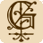
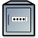

Passwortmanager
Zum Verständnis dieses Artikels sind folgende Seiten hilfreich:
Wer kann sich schon alle Passwörter merken? Gute Passwörter sind kompliziert, und immer das Gleiche zu verwenden öffnet dem, der es heraus findet, auf einen Schlag alle Türen. Deshalb gibt es Programme, die den Umgang mit Passwörtern erleichtern. Wichtig ist dabei, dass die Passwortdaten nur verschlüsselt gespeichert werden und nicht ohne ein weiteres Passwort ("Masterpasswort") ausgelesen werden können.
KDE (Kubuntu)¶
Nutzer der KDE-Oberfläche haben mit der KDE Brieftasche (Kwallet) bereits eine Passwortverwaltung eingebaut, die von allen KDE-Programmen verwendet wird.
GNOME (Ubuntu)¶
Schlüsselbund¶
Die Standardpasswortverwaltung ist der GNOME Schlüsselbund, der automatisch vorinstalliert ist.
MATE¶
Revelation¶
MATE-Nutzer können das Programm Revelation  benutzen. Es handelt sich um ein eigenständiges Programm, das auch Schnittstellen zu anderen Programmen, wie beispielsweise Webbrowsern, bietet und ein Panel-Applet mitliefert, mit dem bequem nach einem bestimmten Passwort gesucht werden kann. Auf Wunsch kopiert es dann automatisch sowohl Benutzername als auch Passwort in die Zwischenablage, so dass mit zwei Klicks (mittlere Maustaste) sehr schnell das Passwort eingegeben ist. Das zu installierende Paket heißt [1]:
benutzen. Es handelt sich um ein eigenständiges Programm, das auch Schnittstellen zu anderen Programmen, wie beispielsweise Webbrowsern, bietet und ein Panel-Applet mitliefert, mit dem bequem nach einem bestimmten Passwort gesucht werden kann. Auf Wunsch kopiert es dann automatisch sowohl Benutzername als auch Passwort in die Zwischenablage, so dass mit zwei Klicks (mittlere Maustaste) sehr schnell das Passwort eingegeben ist. Das zu installierende Paket heißt [1]:
revelation (universe)
 mit apturl
mit apturl
Paketliste zum Kopieren:
sudo apt-get install revelation
sudo aptitude install revelation
Desktopunabhängig¶
Figaro's Password Manager 2¶
Figaro's Password Manager 2 (FPM2) ist ein einfacher GTK-basierter und desktop-unabhängiger Passwortmanager. Die Anwendung kann direkt aus den offiziellen Paketquellen installiert werden:
fpm2 (universe)
mit apturl
Paketliste zum Kopieren:
sudo apt-get install fpm2
sudo aptitude install fpm2

Gringotts¶
Gringotts ist ein weiterer GTK-basierter, Desktop-unabhängiger Passwortmanager, dessen Hauptaugenmerk auf Sicherheit liegt. Gringotts gibt dem Benutzer die Wahl zwischen zahlreichen Verschlüsselungs- und Kompressionsalgorithmen und schützt den Speicher damit keine bösartige Software die Passwörter auslesen kann.
Terminal¶
 pass ist ein Passwortmanager für die Kommandozeile, der u.a. die Weitergabe/Synchronisierung von Passwörtern mit Hilfe von Git ermöglicht.
pass ist ein Passwortmanager für die Kommandozeile, der u.a. die Weitergabe/Synchronisierung von Passwörtern mit Hilfe von Git ermöglicht.
pass (universe)
mit apturl
Paketliste zum Kopieren:
sudo apt-get install pass
sudo aptitude install pass
mit QtPass existiert auch eine GUI für Pass.
qtpass (universe)
mit apturl
Paketliste zum Kopieren:
sudo apt-get install qtpass
sudo aptitude install qtpass
Plattformübergreifend¶
KeePassX¶
KeePassX ist ein Programm, das es auch für Windows und Mac OS X gibt. Interessant für diejenigen, die unter verschiedenen Betriebssystemen arbeiten (müssen). Es verfügt über eine Browser-Schnittstelle, so dass Webseiten per Tastendruck direkt aus der Anwendung heraus aufgerufen werden können.
Password Safe¶
Password Safe ist ein Windows-Programm, das als Open Source deklariert und auf Linux portiert wurde. Allerdings befindet sich die Linux-Version noch in der Beta-Phase (Stand: 12/2015). Das von Bruce Schneier entwickelte Programm kann ab Ubuntu 16.04 aus den offiziellen Paketquellen installiert werden:
passwordsafe (universe)
mit apturl
Paketliste zum Kopieren:
sudo apt-get install passwordsafe
sudo aptitude install passwordsafe
Für ältere Ubuntu-Versionen wird auf SourceForge  ein Fremdpaket angeboten.
ein Fremdpaket angeboten.
Hinweis!
Fremdpakete können das System gefährden.
Links¶

Pasaffe
- Abspaltung von Password SafeGPassword Manager
- auf Qt-Basis, Fremdpakete verfügbarMyPasswords
- verwendet Java als GrundlageSicherheit
 Übersichtsartikel
Übersichtsartikel
- Erstellt mit Inyoka
-
 2004 – 2017 ubuntuusers.de • Einige Rechte vorbehalten
2004 – 2017 ubuntuusers.de • Einige Rechte vorbehalten
Lizenz • Kontakt • Datenschutz • Impressum • Serverstatus -
Serverhousing gespendet von